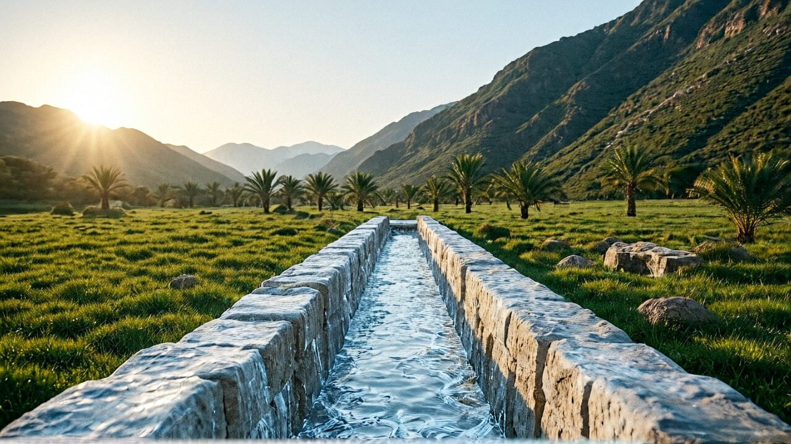
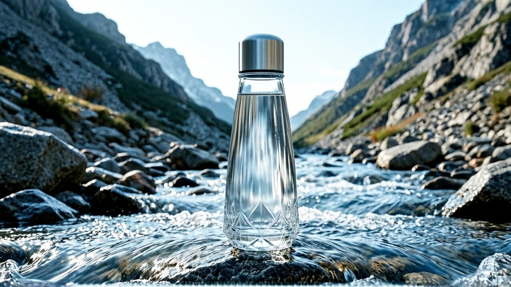
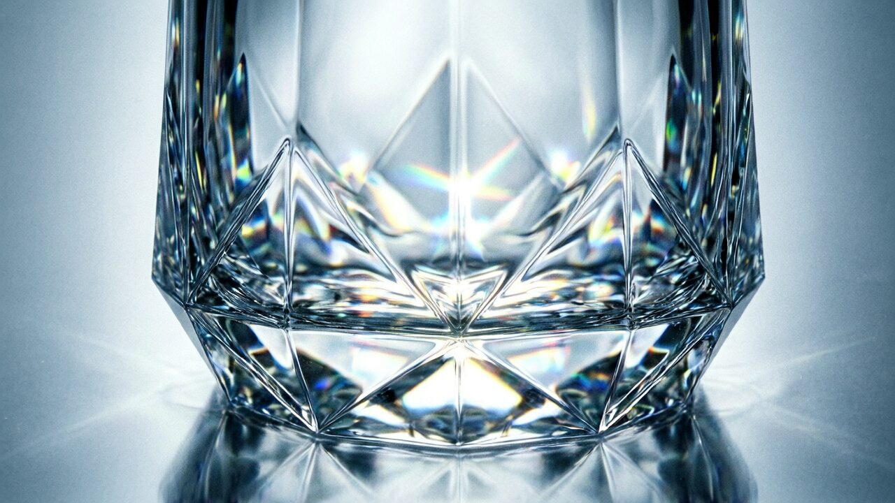
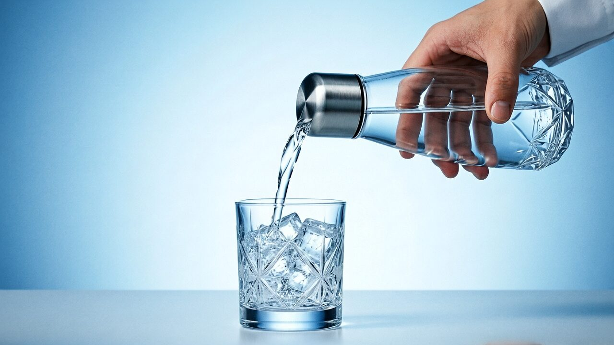
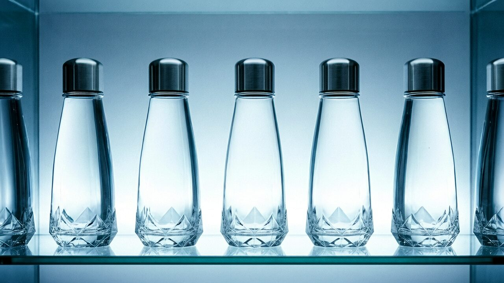
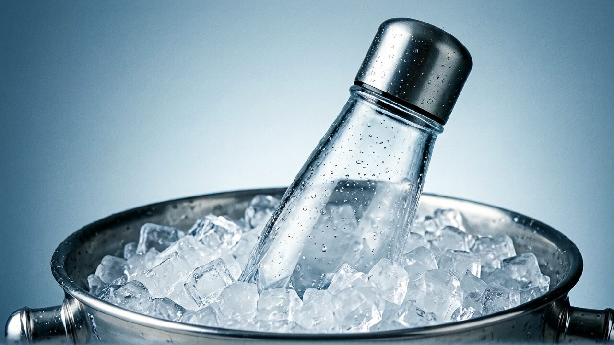
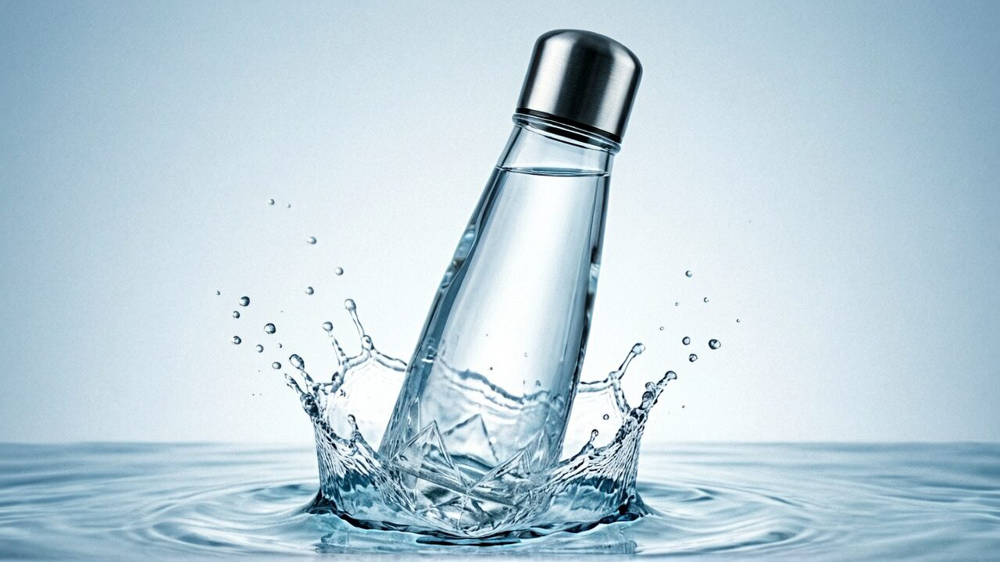
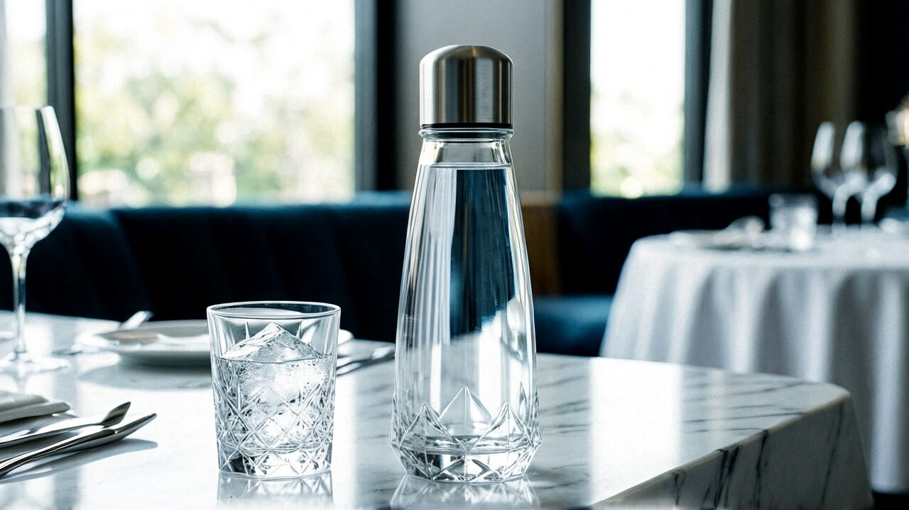
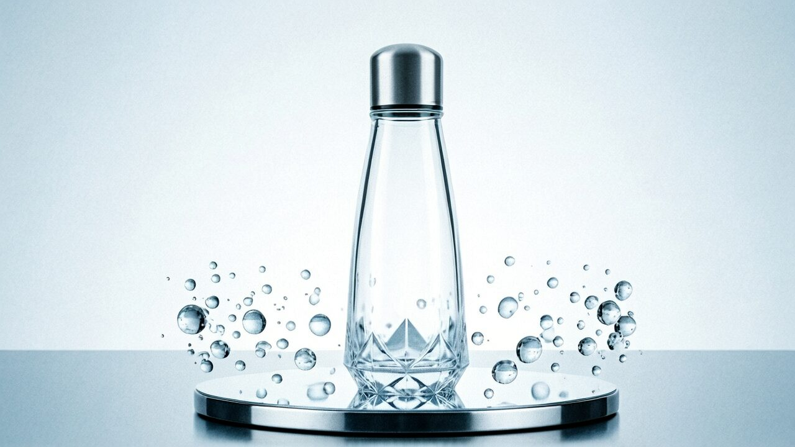

The source
Born in the mountains. Carried by the falaj.
For centuries, stone channels called aflaj have carried mountain water down to the oases. AFLAJ follows the same path: filtered by rock, cooled by the earth, untouched until it meets your glass.
The journey of a drop
From the peak to the table.

01 — SPRING
Cold mountain stream
Snow-fed water runs over granite and gathers minerals slowly, the natural way.

02 — CRYSTAL
A bottle cut like a gem
Heavy crystal-clear glass with a faceted base that throws light across the table.

03 — SERVICE
Poured, never rushed
Made for fine dining, private majlis and the moments worth slowing down for.
In numbers
Pure by nature, not by process.
0years of stone channels behind every drop
0natural pH, balanced by rock
0plastic touches the water



For the table
The water fine restaurants are proud to pour.
AFLAJ is served by the bottle in restaurants, hotels and private homes. Ask for a tasting set for your venue.

